Kamitonda, Wakayama: things to do, food and stays
Kamitonda · Wakayama
Kamitonda
Highlighted on the Wakayama map.
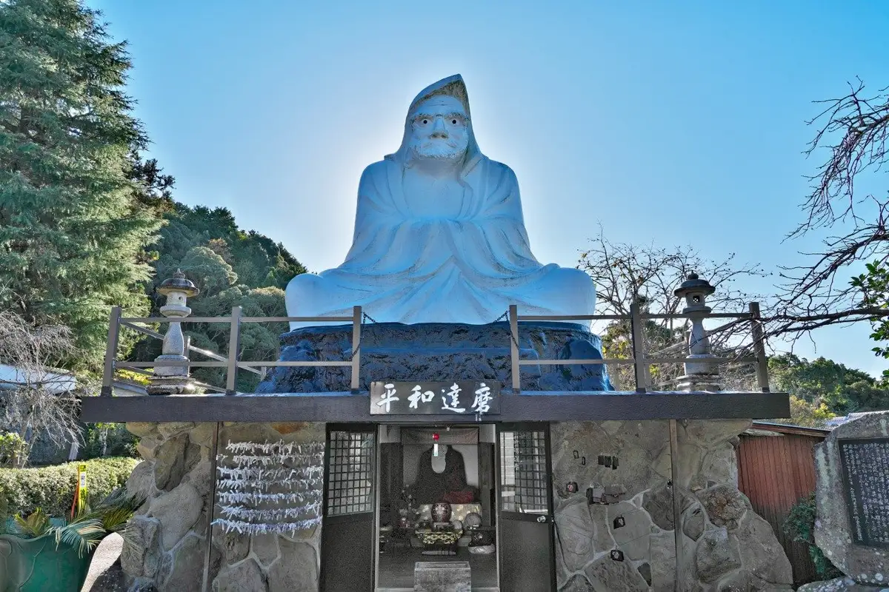
Stay
わんわんパラダイスプレミア南紀白浜
Wanwan Paradaisupuremia Nankishirahama
民宿サカイ
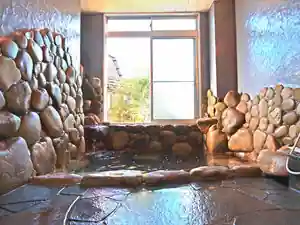
Minshuku Sakai
ゲストハウスカフェ 口熊野
Guesthouse Cafe Kuchi Kumano
Guesthouse in Asago, Kamitonda; 2-minute drive from Kumanokodohenoakusesu( Station.
ハックベリーハイム口熊野
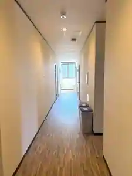
Hakkuberihaimu Kuchi Kumano
Inn in Ikuma, Kamitonda with family-friendly stays and business travelers.
南紀白浜リゾートホテル
Nankishirahama Resort Hotel
Resort hotel in Iwasaki, Kamitonda with Wi-Fi and parking.
民泊梅ちゃん
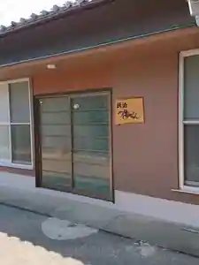
Minpaku Ume Chan
民泊「日ノ熊」
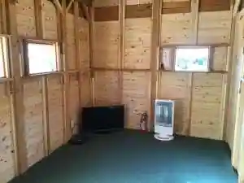
Minpaku (Nichi No Kuma)
Inn in Oka, Kamitonda with breakfast available.
Dining
鮨 よし田
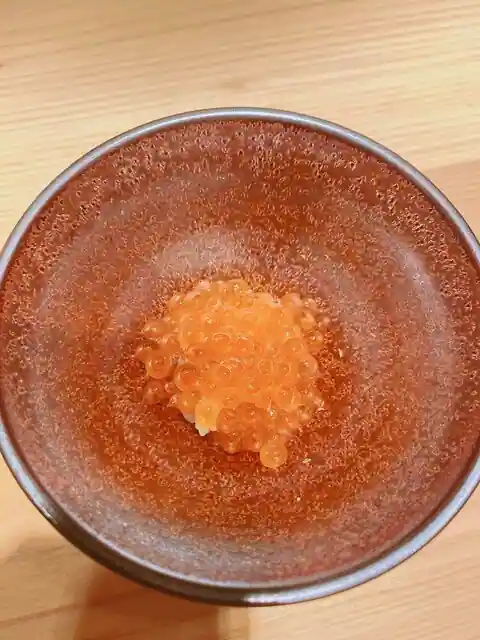
Sushi Yoshi Ta
おおみや
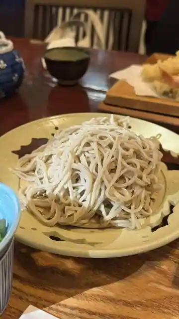
Omiya
麺家 口熊野食堂
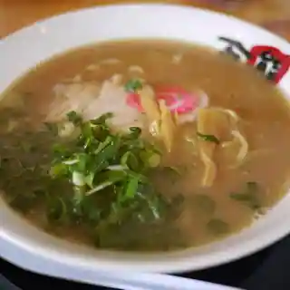
Men Ie Kuchi Kumano Shokudo
川よし
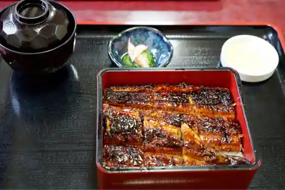
Kawa Yoshi
たまご食堂
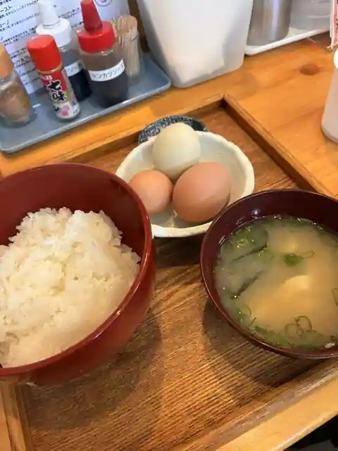
Tamago Shokudo
道の駅 くちくまの
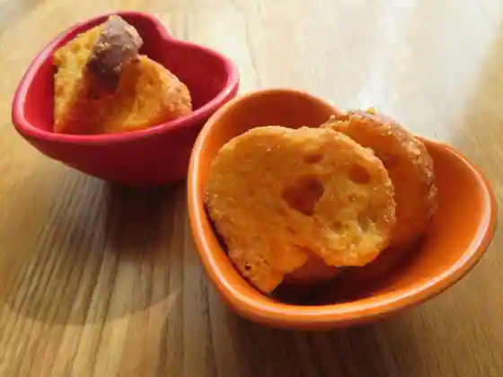
Michi No Eki Kuchikumano
獅子林
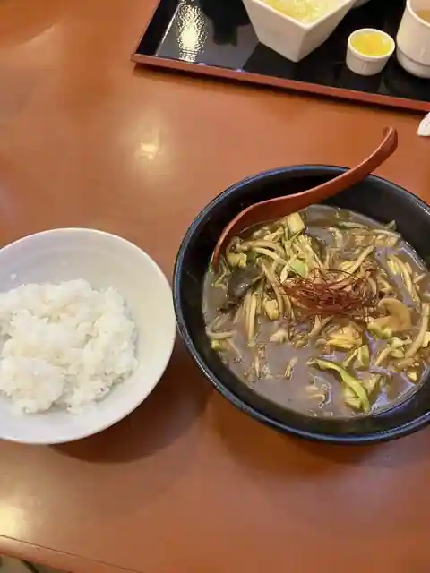
Shishi Hayashi
カフェ&ダイニング 桜香
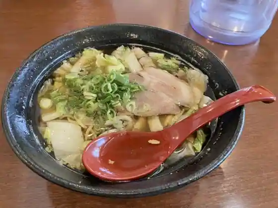
Cafe & Dining Oka
中国料理 宏華
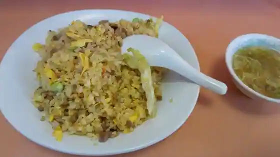
Chugokuryori Hiroshi Hana
定食 うら
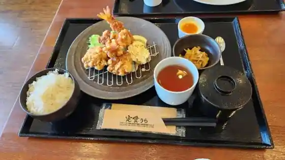
Teishoku Ura
和歌山海鮮 たつのや
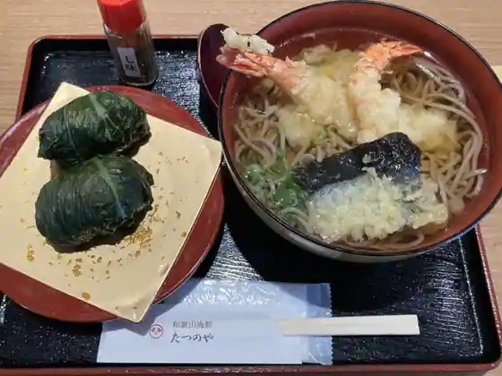
Wakayama Kaisen Tatsunoya
鶏白湯らーめん 鶏ノ極
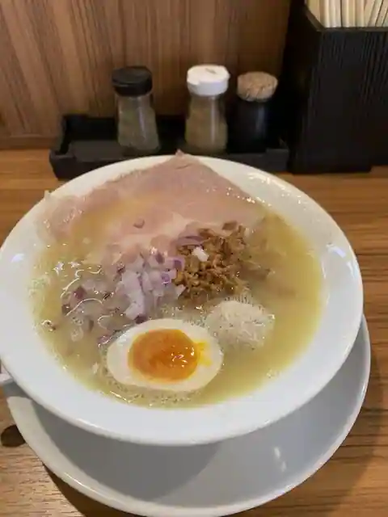
Niwatori Sayu Ramen Niwatori No Kyoku
中華料理亨春
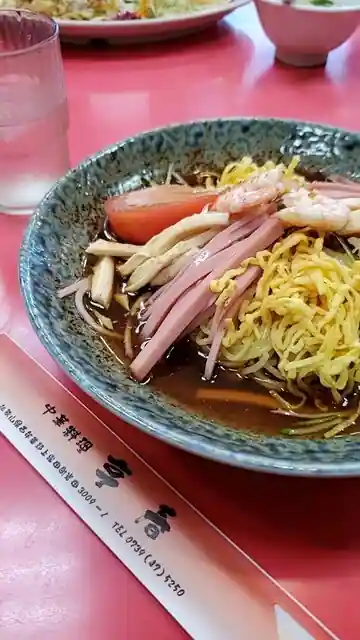
Chukaryori Toru Haru
観音山フルーツパーラー 観音山フルーツカフェ南紀の台店
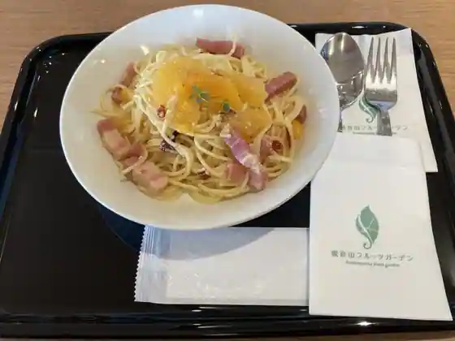
Kannon Yama Furutsupara Kannon Yama Furutsu Cafe Nanki No Dai
茶楽
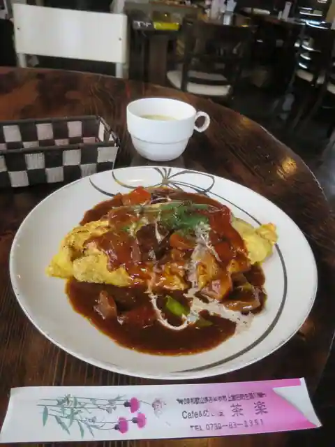
Cha Raku
農家イタリアン sorriso
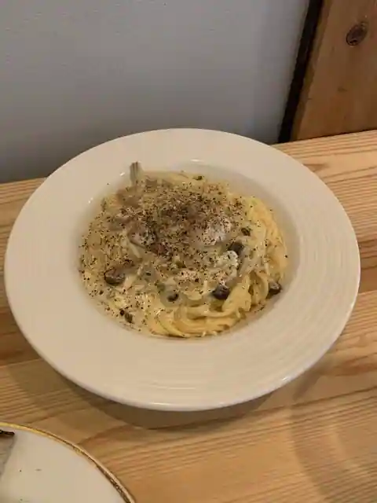
Noka Itarian sorriso
南紀白浜わんわんパラダイス
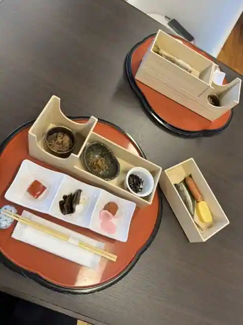
Nankishirahama Wanwan Paradaisu
Acoustic Cafe
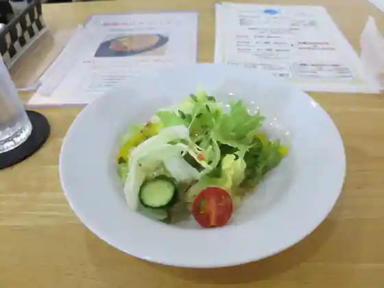
Acoustic Cafe
ダイニング 燦
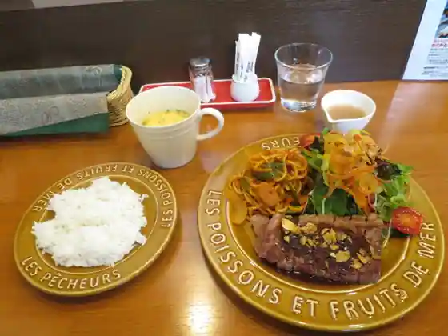
Dining San
大衆食堂 焼肉 ふなちゃん
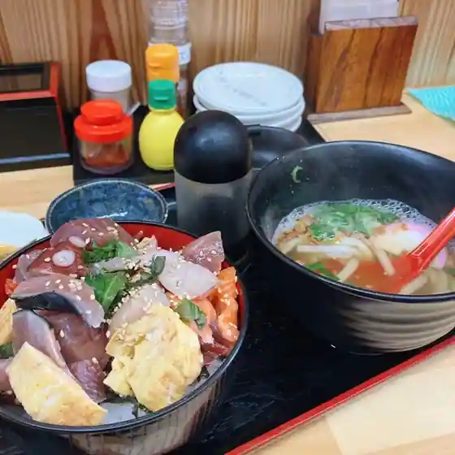
Taishu Shokudo Yakiniku Funachan
堀製菓
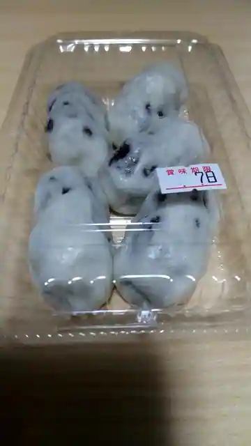
Hori Seika
鮨処 若松家
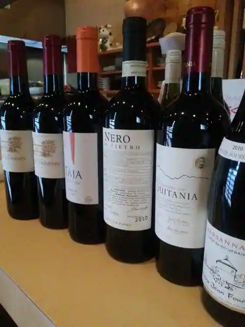
Sushi Tokoro Wakamatsu Ie
Sights
Roadside Station
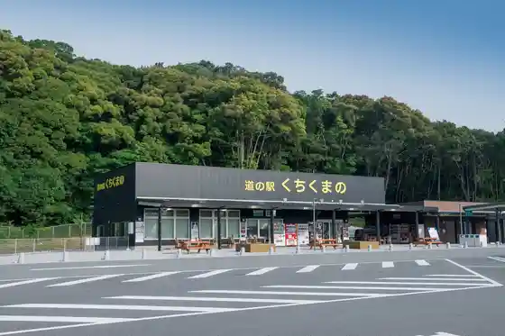
Kyu Uma Kei Kannon
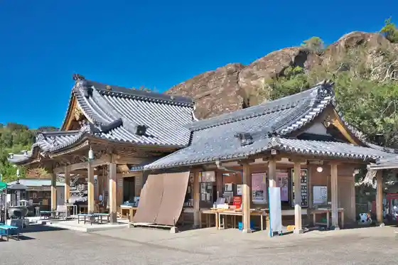
Kozen Tera (Daruma Tera)
Mizugori Ba
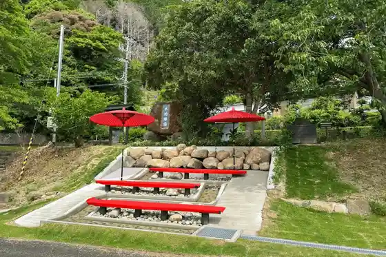